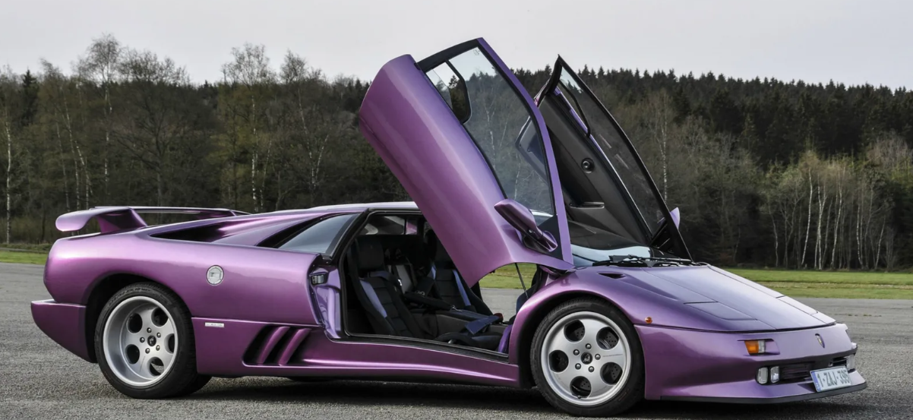
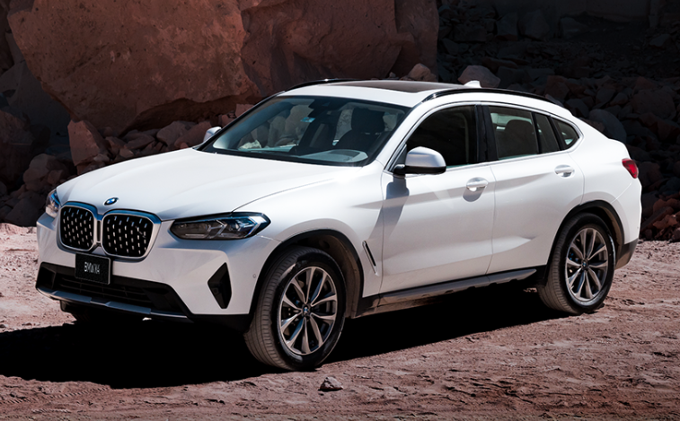

Lamborghini
El Lamborghini Diablo marcó un antes y un después en su historia, y para muchos aficionados de estos automóviles, el verdadero parteaguas surgió a partir del lanzamiento de este modelo que hoy cumple 30 años y hemos decidido recordarlo y celebrarlo.
Jaguar

La obra maestra de Sir William Lyons de 1961 fue una vez el superdeportivo de alguna manera económico. Las sexys líneas del E-Type no dejan indiferente a ningún aficionado a los coches, para muchos el coupé y el roadster de Jaguar encabezan la lista de los clásicos más bonitos de la historia. La primera Serie I llevaba un motor de 3.8 litros.
Bmw
Las poderosas proporciones de este Coupé se combinan perfectamente con los motores TwinPower Turbo de fina ingeniería, desde el cilindro de 4 cilindros en línea de los modelos 420i hasta el de 6 cilindros en línea de los modelos M440i, que entregan hasta 387 caballos de fuerza.